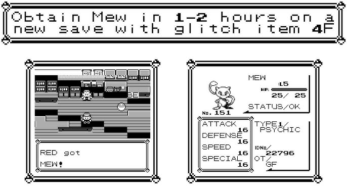
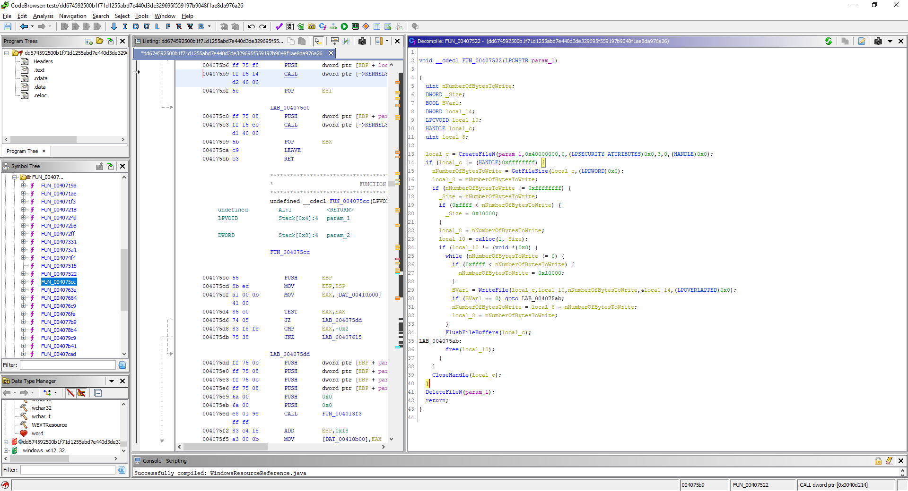
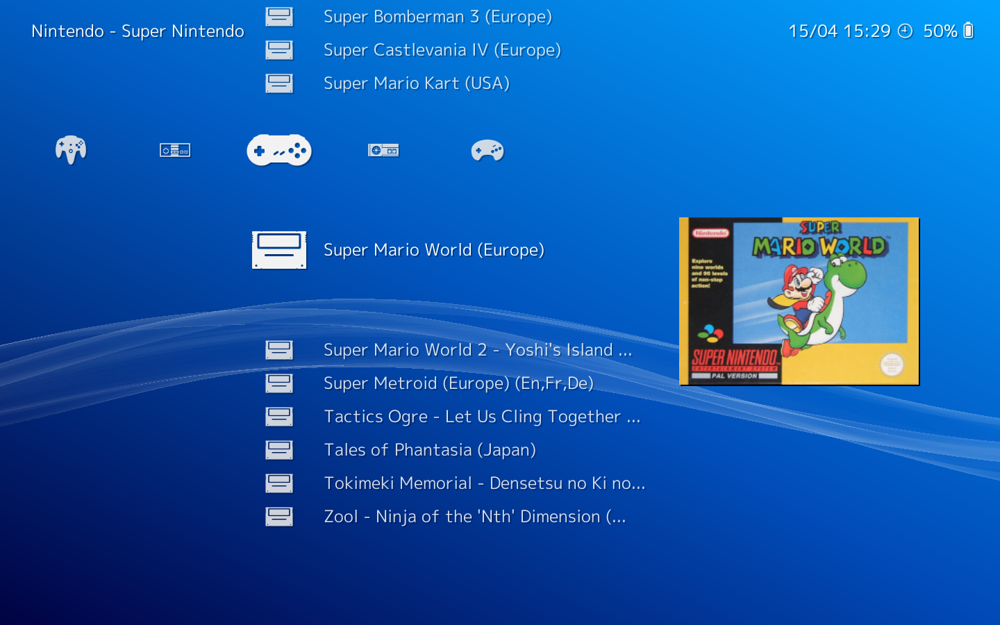
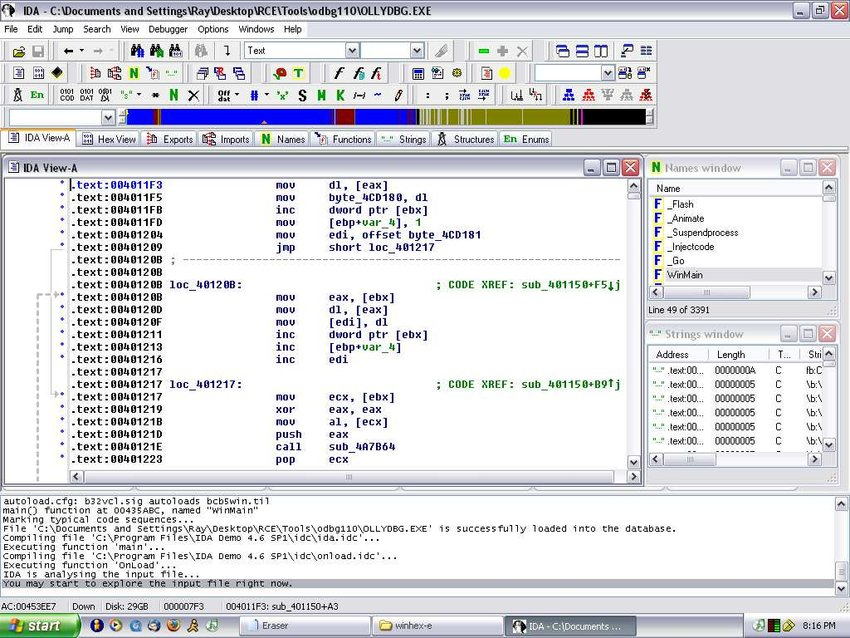

--- # Exploring Save File Exploits and Modifications in Pokémon Gold ### Understanding ACE, RCE, and Memory Structures <div style="text-align: center;"> <img src="images/home.jpg" style="max-width: 80%; height: auto;" alt="Home Image"> </div> --- # What Are We Doing? - Demonstrating save file manipulation in Pokémon Gold. - Topics covered: - **Arbitrary Code Execution (ACE):** Running custom code. - **Remote Code Execution (RCE):** Executing code externally. - **Memory Structure:** Understanding offsets and targeted data edits. **Practical Applications:** - Changing in-game money. - Ensuring save file integrity with checksums. - Automating repetitive modifications. <div style="text-align: center;">  </div> --- # Arbitrary Code Execution (ACE) - **Definition:** Running custom code by exploiting memory or save file vulnerabilities. <div style="text-align: center;"> <img src="images/ace-img.jpg" style="max-width: 80%; height: auto;" alt="ACE Example"> </div> --- # Tools for Performing Arbitrary Code Execution ### **1. Hex Editors** - **Examples:** - Hex Fiend (Mac). - HxD (Windows). - **Usage:** - Manually locate and modify offsets within save files or executables. --- ### **2. Memory Debuggers** - **Examples:** - Cheat Engine: Analyze live memory states in games. - Ghidra: Analyze and modify program execution at runtime. - **Usage:** - Redirect execution to unintended code paths. - Dynamically test memory modifications. --- ### **3. Exploit Development Frameworks** - **Examples:** - GDB (GNU Debugger): Debug and manipulate binaries. - IDA Pro: Disassemble and understand program structure. - **Usage:** - Reverse engineer and develop custom code execution strategies. <div style="text-align: center;">  </div> --- # Remote Code Execution (RCE) - **Definition:** Executing code on a system using external tools or data sources. <div style="text-align: center;"> </div> --- # Tools for Performing Remote Code Execution ### **1. Save File Editors** - **Examples:** - PKHeX: Edit Pokémon save files. - GameShark/Action Replay: Modify in-game memory via external devices. - **Usage:** - Directly inject or modify data in save files or memory blocks. <div style="text-align: center;"> <img src="images/pkhex.png" style="max-width: 80%; height: auto;" alt="PKHeX"> </div> --- ### **2. Emulators** - **Examples:** - VisualBoyAdvance: Load save files and test modifications. - RetroArch: Integrate with tools for debugging and testing. - **Usage:** - Load modified save files to validate changes. - Test custom patches in a controlled environment. <div style="text-align: center;">  </div> --- ### **3. Scripting Tools** - **Examples:** - Python (e.g., save file automation). - Bash/PowerShell for bulk file edits. - IDA to decompile and edit. - **Usage:** - Automate remote modifications across multiple files. - Validate and deploy patches efficiently. <div style="text-align: center;">  </div> --- # How Memory Works in Save Files - **Memory as a Data Grid:** - Save files are structured like a grid of memory addresses. - Each address (or offset) stores specific pieces of data. <div style="text-align: center;"> <img src="images/memory-2.gif" style="max-width: 80%; height: auto;" alt="Memory Grid"> </div> --- # Endianness and Data Decoding ### **Endianness** - **Definition:** Refers to the order in which bytes are stored in memory. --- # Checksums and Validation ### **What is a Checksum?** - **Definition:** A numerical value calculated from a block of data to ensure integrity. --- # Key Takeaways - **ACE and RCE:** - Enable precise, targeted changes to memory for custom functionality. - Highlight the importance of securing systems against unintended code execution. - **Memory Structures and Endianness:** - Understanding how data is stored (e.g., offsets and endianness) is critical for manipulating files and debugging. - **Data Integrity:** - Checksums provide a real-world mechanism to ensure data consistency and validate file integrity. - **Relevance Beyond Gaming:** - These concepts apply to web development, data validation, security, & database optimization/design practices.